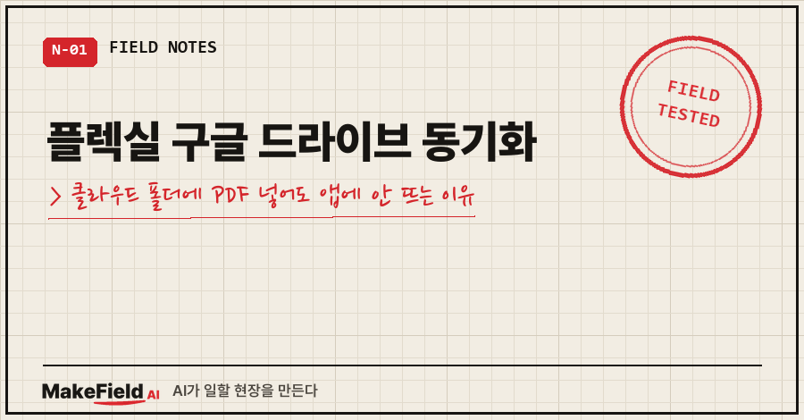
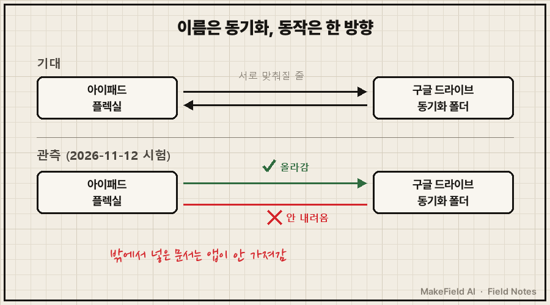
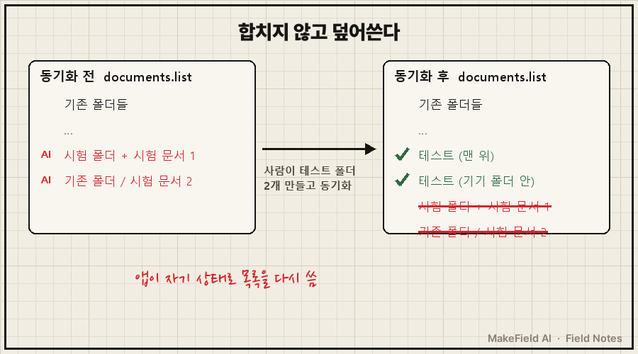
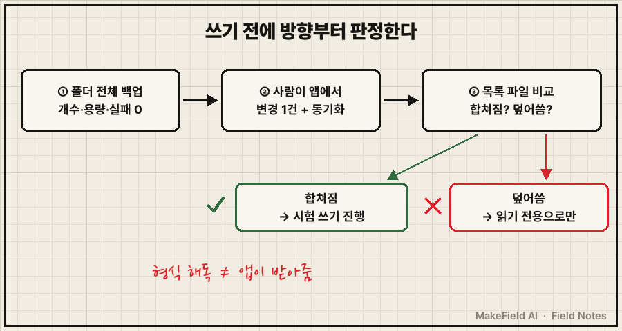

컴퓨터에서 구글 드라이브의 플렉실 동기화 폴더에 문서를 넣었어요.
아이패드에서 앱을 껐다 켜고, 동기화 버튼도 눌렀습니다.
안 떴어요. 두 번 해도 안 떴고요.
먼저 답을 드리면, 플렉실 구글 드라이브 동기화는 제가 시험한 범위에서 '아이패드 → 클라우드' 한 방향으로만 동작했어요. 클라우드 폴더에 바깥에서 넣은 문서는 앱이 가져가지 않았고, 다음 동기화 때 앱이 목록 파일을 자기 상태로 덮어써서 그 흔적까지 지웠습니다. (2026년 11월 12일, 개인 아이패드·윈도우 PC 실측. 공식 사양이 아니라 관측 결과예요.)
평일엔 공장 설비 제어를 붙잡고 사는 15년차 엔지니어이고, 퇴근 후 공부 자료는 거의 아이패드로 읽어요.
그 아이패드에서 생긴 일입니다.
1. 왜 동기화 폴더에 넣으면 될 거라고 생각했을까
시작은 귀찮음이었어요. 아이패드 기본 파일 앱으로 PDF를 보면 미리보기가 갑자기 확대됐다 줄었다 해서 읽기가 불편했거든요. 그날 AI한테 쓴 말 그대로 옮기면 "귀찮아죽겟음"이었습니다..
그래서 영구 라이선스로 사 두고 잘 쓰던 필기앱 플렉실(Flexcil)로 읽고 싶었어요. 그런데 플렉실은 문서를 한 건씩 가져오고, 폴더 정리도 손으로 해야 해요.
머릿속 그림은 단순했어요.
구글 드라이브 폴더에 PDF를 폴더째 넣는다,
플렉실 클라우드 동기화가 그걸 받아 온다,
폴더 정리 끝.
여러분도 '동기화'라는 단어를 보면 양쪽이 서로 맞춰진다고 생각하시죠? 저도 딱 그렇게 믿었어요.

2. 고려한 방법 네 가지, 그리고 남은 하나
AI랑 같이 놓고 본 선택지는 이랬어요.
| 방법 | 장점 | 안 고른 이유 |
|---|---|---|
| 기본 파일 앱으로 계속 읽기 | 추가 작업 없음 | 미리보기 확대·축소가 제멋대로라 읽기 불편 |
| 플렉실에서 한 건씩 가져오기 | 공식 방법, 안전 | 폴더 정리를 매번 손으로 해야 함 |
| 다른 PDF 앱으로 교체 | 원본을 바로 열 수 있을지도 | 플렉실을 영구 라이선스로 사서 애용 중 → 철회 |
| 동기화 폴더에 직접 문서 넣기 | 폴더째 자동 반영(기대) | 이번 글의 시험 대상 |
미리 적어 두면, 제가 찾아본 플렉실 공식 도움말에는 "클라우드 폴더를 감시해서 새 PDF를 자동으로 가져온다"는 설명이 없었어요. 클라우드 연결은 내려받기 위주로만 설명돼 있었고요. 그래서 마지막 칸은 처음부터 근거 없는 기대였고, 시험으로 확인해야 했습니다.
3. AI가 동기화 폴더 형식을 뜯어봤어요
구글 드라이브 데스크톱 앱을 깔고 플렉실 클라우드 동기화를 켜자, 컴퓨터에 동기화 폴더가 생겼어요. AI가 그 안을 열어 본 결과는 이랬습니다. 제가 관측한 구조이고 공식 사양은 아니에요.
Flexcil Sync/
├─ documents.list ← 폴더 트리 목록 (앞 8바이트 길이 + 압축된 JSON)
└─ <문서ID>.flx ← 문서 1개 = zip 묶음
├─ attachment/PDF/ ← 원본 PDF 그대로
├─ info ← 문서 이름 (평문 JSON)
├─ pages.index ← 쪽 크기·순서 (평문 JSON)
└─ objects/<쪽>.drawings ← 필기 획 좌표날짜는 유닉스 초 단위였고요. 최근 문서 40건 중 12건에 필기 데이터가 들어 있는 것도 확인했어요.
형식을 이 정도까지 알았으니, 같은 모양으로 문서를 만들어 넣고 목록에 한 줄 추가하면 앱이 받아 줄 것 같았죠.
4. 쓰기 시험 두 번, 그리고 판정 시험
시험 전에 제가 AI한테 "다 날려먹어도 돼"라고 했어요. 그런데 AI는 바로 쓰지 않고 백업부터 떴습니다. 이 순서가 나중에 저를 살렸어요.
23:10 "다 날려먹어도 돼" → 동기화 폴더 전체 백업 (318개, 2.48GB, 실패 0)
23:15 시험 문서 1 (새 폴더에 넣음) → 앱에 안 보임
23:16 시험 문서 2 (기존 폴더에 넣음) → 앱 재시작·드라이브 동기화해도 안 보임
23:24 내가 앱에서 '테스트' 폴더 2개 생성 → 동기화
→ 목록 파일을 앱이 새로 씀: 테스트 2개 들어감, AI가 넣은 2줄 사라짐두 번째 시험 뒤에 확인해 보니, 앱은 그 시간 이후 동기화 폴더에 아무것도 쓰지 않았어요. 바깥 변경을 내려받지 않는다는 신호였죠.
결정타는 마지막 판정 시험이었습니다. 사람이 앱에서 만든 변경 1건을 일부러 일으켜 본 거예요. 앱은 클라우드 목록을 읽어서 합치지 않았어요. 자기 아이패드 상태로 목록을 통째 다시 썼고, AI가 넣은 두 줄은 그 과정에서 빠졌습니다.

덤으로 하나 더 나왔어요. 동기화를 처음 연결한 순간, 제 라이브러리가 '예전 클라우드본'과 '아이패드 기기본' 두 벌로 이미 중복돼 있었습니다. AI가 뭘 쓰기 전부터요. 이건 아직 정리 방법을 정하지 않았어요.
5. 결론: 읽어 오는 건 되고, 넣는 건 안 됐어요
정리하면 플렉실 구글 드라이브 동기화는 필기를 '꺼내 읽는 길'로는 쓸 수 있고, 문서를 '넣는 길'로는 쓸 수 없었어요. 클라우드 폴더를 읽기만 하면 원본 PDF와 필기 획이 다 들어 있으니까요.
그래서 들여오기 자동화는 접었고, 필기 읽기도 일단 보류했어요. 제가 "일단 이건 하지말자 다음에 생각합시다"라고 정리했거든요. 대신 시험 흔적은 지우지 말고 두라고 했습니다. 나중에 앱이 바뀌면 같은 파일로 다시 확인할 수 있으니까요.
이번에 바꾼 작업 순서는 하나예요. 형식을 해독하는 것과, 앱이 그걸 받아들이는지는 별개입니다. 그래서 이제 동기화 폴더에 뭔가 쓰기 전엔 이렇게 해요.
- 동기화 폴더 전체를 백업한다 (개수·용량·실패 0건 확인)
- 앱에서 사람이 변경 1건을 만들고 동기화한다
- 목록 파일이 '합쳐지는지, 덮어써지는지' 본다 → 덮어쓰면 그 폴더엔 쓰지 않는다

여기서 자주 막히는 질문
Q. 플렉실 구글 드라이브 동기화를 켜면 드라이브에 넣은 PDF가 앱에 생기나요?
제 시험에선 안 생겼어요. 새 폴더에 넣은 것도, 기존 폴더에 넣은 것도 앱 재시작과 동기화 뒤에 보이지 않았습니다. 문서는 앱의 가져오기 기능으로 넣는 게 맞아요.
Q. 동기화 폴더 안 파일을 직접 고치면 위험한가요?
그 폴더는 앱의 내부 데이터라서 위험해요. 저는 백업(318개, 2.48GB)을 먼저 떴고, 복구 방법도 '백업 폴더를 그대로 되돌려 복사'로 정해 둔 뒤에 시험했어요. 백업 없이 손대지 마세요.
Q. 필기 내용은 컴퓨터에서 꺼낼 수 있나요?
구조상으로는 가능해 보여요. 문서 묶음 안에 원본 PDF와 쪽마다 필기 획 데이터가 같이 들어 있었거든요. 저는 보류 중이라 직접 구현까진 안 했어요. 지금 당장 필요하면 앱의 공식 내보내기(필기를 합친 PDF)가 가장 안전합니다.
'동기화'라는 이름 하나로 양방향을 믿었다가, 사람이 만든 폴더 하나에 결론이 났어요. 다음에 이 작업을 다시 열면 그 필기 읽기 쪽부터 이어 적어 볼게요.
집이나 팀에서 쓰는 앱·클라우드 사이 자료 흐름을 '어디가 원본인지'부터 다시 그려 보고 싶으시면, makefield.ai에서 이런 시험 사례를 같이 보며 이야기 나눠요.
출처
- Google Drive 고객센터, 데스크톱용 Drive 사용하기 → https://support.google.com/drive/answer/7329379
- 실측: 2026-11-12 개인 아이패드 플렉실 클라우드 동기화·윈도우 PC 시험 기록(경로·계정·문서 ID 제외). 내부 파일 구조는 관측 결과이며 공식 사양 아님
태그: #플렉실구글드라이브동기화 #플렉실 #Flexcil #플렉실동기화 #아이패드필기앱 #아이패드PDF #구글드라이브동기화 #클라우드동기화 #단방향동기화 #필기앱PDF가져오기 #아이패드공부 #파일형식분석 #백업먼저 #막힐때해결 #MakeFieldAI